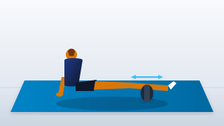
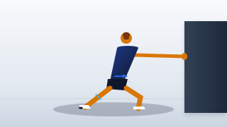
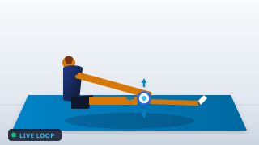

• 0 a 2m: Pedaleo suave (80–85 RPM), sin carga. Estimula el líquido sinovial.
• 2 a 4m: Alternar 30s de pedaleo con énfasis en flexión plantar con 30s suave.
• 4 a 5m: Pedaleo muy ligero de recuperación.
✔ Activa la bomba vascular de los gemelos sin impacto articular.

Rodillo en la pantorrilla. Rodar del tendón de Aquiles a la rodilla. Gira el pie adentro/afuera.
✔ Despega la fascia y libera puntos de tensión en el gastrocnemio.
Rodillo 2 dedos sobre la rótula. Realiza 4 flexiones lentas de rodilla (*Pin & Stretch*).
⚠️ Alivia la sobrecarga de tracción sobre el polo superior de la rótula.
Posición de caballero, banda tira del astrágalo atrás. Avanza la rodilla sin despegar el talón.
✔ Aumenta la dorsiflexión: previene el impacto rotuliano al frenar.
Apoyo en pared, pierna trasera con rodilla ligeramente doblada y talón pegado al suelo.
✔ Aísla el sóleo y alivia el estrés en el tendón de Aquiles.
Pierna trasera 100% estirada en línea con la pelvis. Avanza el cuerpo hasta notar el gemelo alto.
✔ Alarga el gemelo superior manteniendo la reactividad en el sprint.
Sentada, pierna relajada. Con los pulgares, desliza la rótula suavemente hacia abajo, arriba y adentro.
✔ Libera adherencias retinaculares y mejora la mecánica rotuliana.
Banda fuerte tras las rodillas anclada al poste. Tronco erguido, tibias verticales. Baja a 60° y mantén firme.
🛡️ Protocolo de oro: analgesia inmediata en el tendón rotuliano.
Pie trasero en banco, rodilla acolchada. Aprieta el glúteo y mantén tronco erguido sin arquear lumbar.
✔ Descarga el recto femoral sin compresión femororrotuliana.
De puntillas con talones muy altos arriba. Apoyo ligero en pared. Sostén firme sin oscilaciones.
🛡️ Rigidez elástica en tendón de Aquiles y estabilidad de tobillo.
Espalda pegada al suelo, pies en flexión dorsal activa. Extiende 1 pierna despacio con abdomen firme.
🛡️ Activación del tibial anterior y estabilización lumbopélvica.
Banda tras la rodilla. Extiende y aprieta el vasto medial 1s.
✔ Centra y estabiliza la rótula.
Saltitos de tobillo. Rodillas casi rectas.
⚡ Reactividad elástica de muelle.